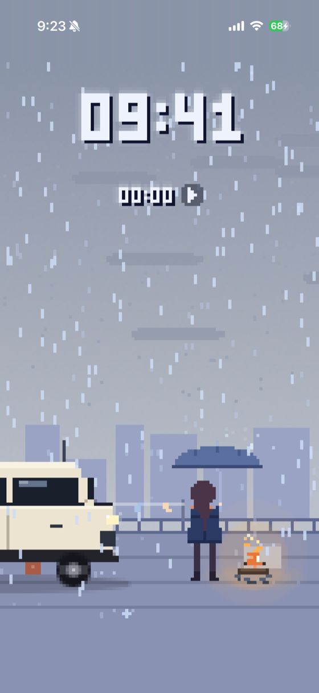

シーンメーカー × 置き時計
雨宿り -Amayadori-
雨の音と、
うつくしい情景に。
アニメ調のピクセルで描いた、雨のなかの静かな風景。やさしい雨音と環境音に包まれる、癒しのシーンメーカーです。机に置けば、そのまま置き時計に。評価も、通知も、急かすものは何もありません。
忙しい一日の終わりに、雨の音がほしくなることがあります。雨宿り は、そんな時間のためのアプリです。眺めているだけで、そっと肩の力が抜けていく——ただ、それだけを大切に作りました。
―
Screens
情景を、のぞいてみる。



01
Features
眺めて、聴いて、ととのう。
雨のなかの情景
アニメ調のピクセルで描いた、雨のなかの静かな風景。海辺、雨の街、紅葉の並木。ただ眺めているだけで、心がほどけていきます。
置き時計 & タイマー
大きな時計で、机の上のインテリアに。集中したい時は、静かなタイマーとしても。作業のおともに、そっと寄り添います。
時間帯と天気
昼と夜、雨・雪・花吹雪。時間や天気で、情景の表情が移り変わります。同じ風景も、いつも少しだけ違って見えます。
情景を集める
登場人物も、風景も、小物も。少しずつ集めるほど、あなただけの情景がひろがっていきます。急がず、気の向くままに。
雨音と環境音
本物の雨音に、静かな BGM。ずっと聞いていられる、耳のための時間。眠る前にも、作業の背景にも。
急かさない設計
スコアも、達成も、通知もありません。ただ、そこに在るだけ。あなたのペースで、好きなだけ雨宿りを。
02
About
ジャンル
情景メーカー & 置き時計
価格
無料
アプリ内課金あり
対応端末
iPhone
iOS
対応言語
3 言語
日本語 / English / 中文